Raymarching
- Exemples
- Algorithme de raymarching
- Modélisation avec des fonctions distances signées
- Illumination
- Démo raymarching en WebGL / Processing
- Programmation en direct
Exemples
the timeless (mercury / Revision 2014 / 64k)
on (mercury / Revision 2015 / 64k)
Catacombs (Íñigo Quílez / Shadertoy)
Bridge (Íñigo Quílez / Shadertoy)
Fractal Land (Kali / Shadertoy)
Solstice (Otavio Good / Shadertoy)
Skyline (Otavio Good / Shadertoy)
Introduction
Technique de synthèse d'images:
- Opposée du rendu par rastérisation (OpenGL, Direct3D, ...)
- Proche du raytracing mais sans calcul explicite d'intersection
Historique:
- 1989: Conçue pour le rendu de fractales puis de surfaces implicites
- 2009 (?)-Aujourd'hui: Renouveau grâce aux langages de shading et à l'arrivée de GPU suffisamment puissants pour le rendu en temps réel
Algorithme de raymarching
Rastérisation:
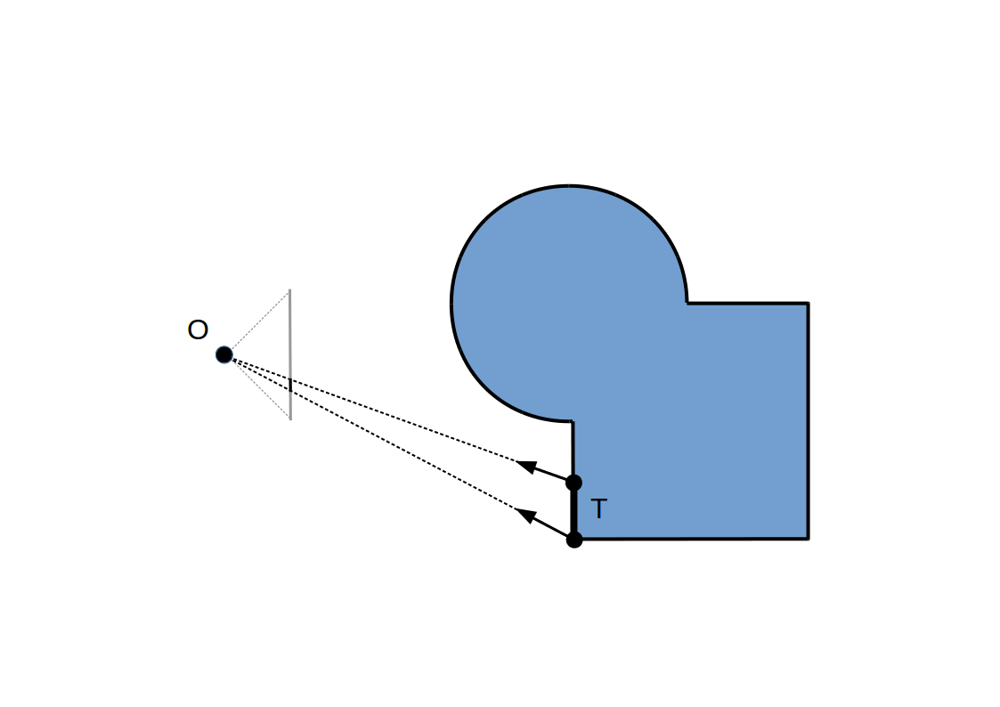Raycasting:
Raymarching à pas constant:
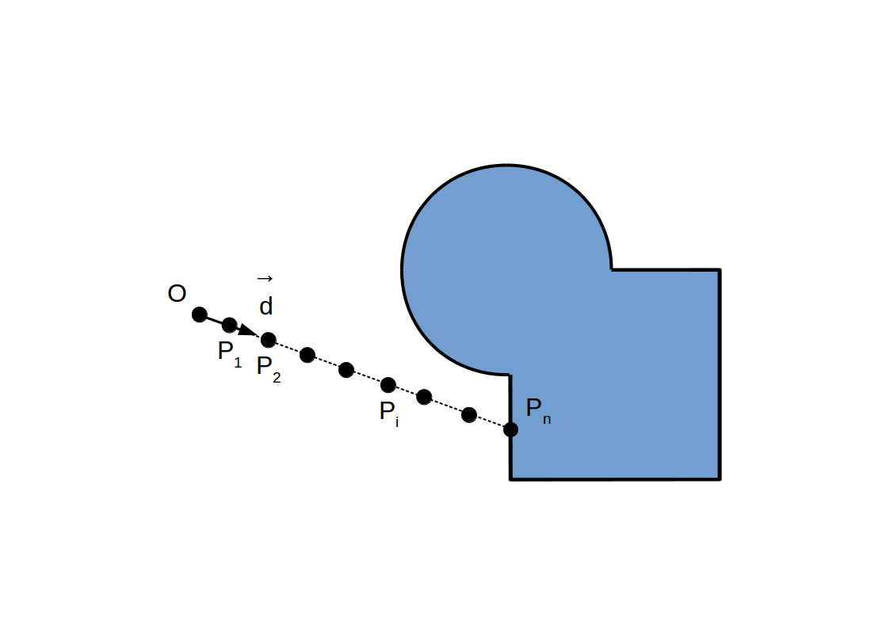Raymarching à pas constant:
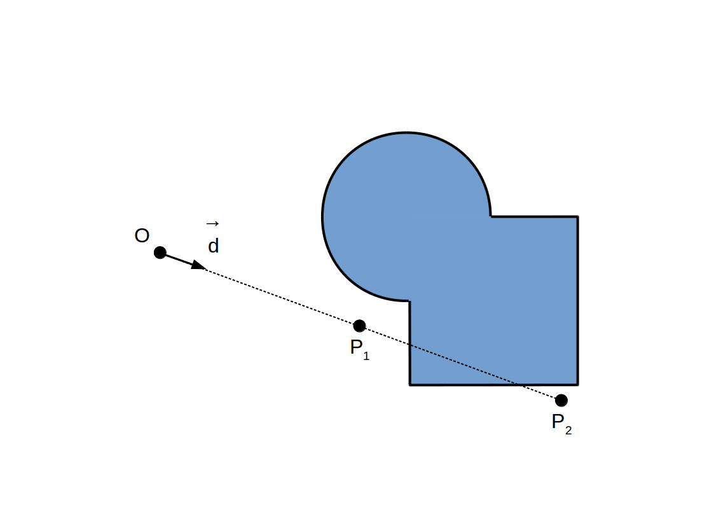Idée: Utiliser la distance à la surface pour ajuster dynamiquement le pas de marche
Raymarching à pas adaptif:
Raymarching à pas adaptif:
Raymarching à pas adaptif:
Raymarching à pas adaptif:
Raymarching à pas adaptif:
Raymarching à pas adaptif:
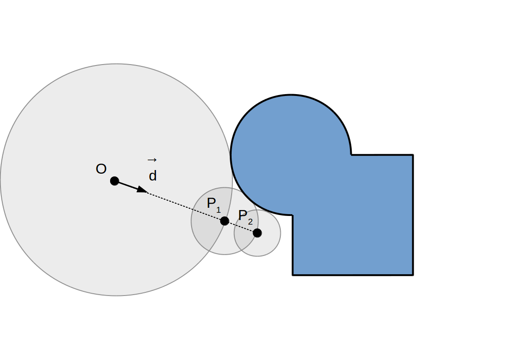Raymarching à pas adaptif:
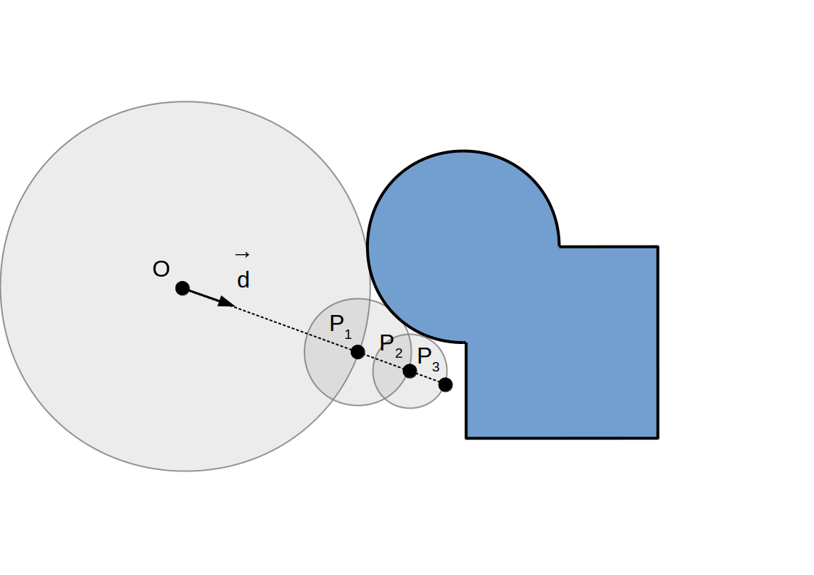Raymarching à pas adaptif:
Raymarching à pas adaptif:
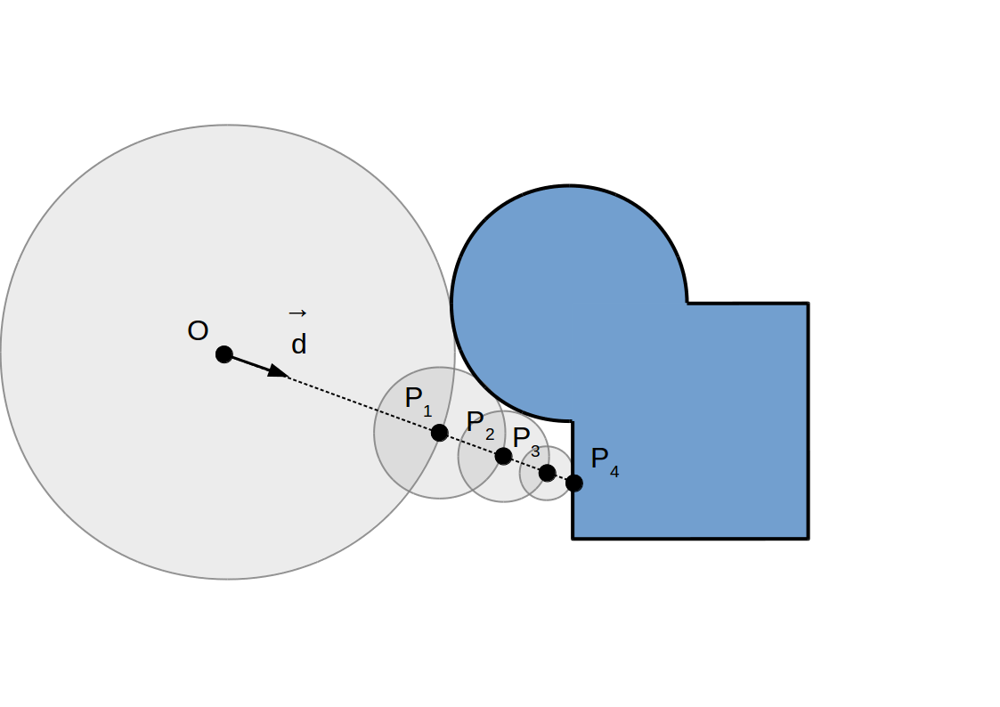Raymarching à pas adaptif:
Implémentation
Code GLSL
float intersect(vec3 O /* origin */, vec3 d /* direction */) {
float t = 0;
for (int i = 0; i < MaxNumSteps; ++i) {
vec3 P = O + t * d;
float r = f(P);
if (r < Epsilon)
return t;
t += r;
}
return MaxT;
}
f(P)?
Fonction distance signée
Un ensemble `ccS` est représenté par une fonction `f`: `bbbR^3 -> bbbR` telle que pour `P in bbbR^3`:
- `f(P) = -d(P, del ccS) iff P in ccS`
- `f(P) = 0 iff P in del ccS`
- `f(P) = d(P, del ccS) iff P !in ccS`
avec `d(P, del ccS) = min_(Q in del ccS) |vec(PQ)|`
(cas particulier de surface implicite)
Primitives de base - Sphère
Code GLSL
float sdfSphere(vec3 P, float R) {
return length(P) - R;
}
Primitives de base - Demi-espace
Code GLSL
float sdfPlane(vec3 P, vec3 n, float d) {
return dot(n, P) + d;
}
Primitives de base
Code GLSL
float sdfCylinder(vec3 P, float R) {
return length(P.xy) - R;
}
Code GLSL
float sdfTorus(vec3 P, float R, float r) {
vec2 Q = vec2(length(P.xy) - R, P.z);
return length(Q) - r;
}
Code GLSL
float sdfCone(vec3 P, vec2 u) {
vec2 Q = vec2(length(P.xy), P.z);
return dot(Q, u);
}
Opérations booléennes
- Union
- `ccS_1 uu ccS_2 = { x in ccS_1 or x in ccS_2 }`
- `f_(ccS_1 uu ccS_2) = min(f_(ccS_1), f_(ccS_2))`
- Intersection
- `ccS_1 nn ccS_2 = { x in ccS_1 and x in ccS_2 }`
- `f_(ccS_1 nn S_2) >= max(f_(ccS_1), f_(ccS_2))`
- Différence
- `ccS_1 \\ ccS_2 = ccS_1 nn bar ccS_2`
- `ccS_1 \\ ccS_2 = { x in ccS_1 and x !in ccS_2 }`
- `f_(ccS_1 \\ ccS_2) >= max(f_(ccS_1), -f_(ccS_2))`
Primitives + Opérations booléennes

- Demi-espace / plan
- normale `vec n` et distance `d_O` à l'origine
- `f(P) = < vec n . vec(OP) > + d_O`
- Tranche d'espace
- centre `O` et demi-dimension `s_x`
- `f(P) = max(< vec e_x . vec(OP) > - s_x, < -vec e_x . vec(OP) > - s_x)`
- `f(P) = max(P_x - s_x, -P_x - s_x)`
- `f(P) = |P_x| - s_x`
- Cylindre à section rectangulaire
- centre `O`, direction `vec e_z` et demi-dimensions `(s_x, s_y)`
- `f(P) = max(|P_x| - s_x, |P_y| - s_y)`
- Pavé droit
- centre `O` et demi-dimensions `vec s`
- `f(P) = max(|P_x| - s_x, |P_y| - s_y, |P_z| - s_z)`
Code GLSL
float sdfBox(vec3 P, vec3 s) {
vec3 Q = abs(P) - s;
return max(Q.x, max(Q.y, Q.z));
}
Autres exemples
- Pavé droit à arrêtes arrondies
Code GLSL
float sdfRoundBox(vec3 P, vec3 s, float r) {
vec3 Q = abs(P) - s;
return length(max(Q, 0.0)) - r;
}
- Capsule
Code GLSL
float sdfCapsule(vec3 P, vec3 P1, vec3 P2, float r) {
vec3 u = P - P1;
vec3 v = P2 - P1;
float d = clamp(dot(u, v) / dot(v, v), 0.0, 1.0);
return length(u - d * v) - r;
}
- Octahèdre / Dodécahèdre / Isocaèdre
Déformations
- Translation, rotation, homothétie
Code GLSL
float sdfAffine(vec3 P) {
mat3 Rz = makeRotation(Pi / 6.0, vec3(0.0, 0.0, 1.0));
mat3 Ry = makeRotation(-Pi / 6.0, vec3(0.0, 1.0, 0.0));
float s = 1.5;
P = s * Ry * Rz * P + vec3(1.0, 0.5, 0.25);
return sdfRoundBox(P, vec3(0.375, 0.5, 0.75), 0.125) / s;
}
- Symmétrie
Code GLSL
float sdfRepeat(vec3 P) {
P.xy = abs(P.xy);
P.xy -= vec2(0.75, 1.0);
return sdfRoundBox(P, vec3(0.375, 0.5, 0.75), 0.125);
}
- Répétition
Code GLSL
float sdfRepeat(vec3 P) {
vec2 size = vec2(2.0, 3.0);
P.xy = mod(P.xy + 0.5 * size, size) - 0.5 * size;
return sdfRoundBox(P, vec3(0.375, 0.5, 0.75), 0.125);
}
- Torsion et courbure
Code GLSL
float sdfTwist(vec3 P) {
float c = cos(P.z);
float s = sin(P.z);
mat2 R = mat2(c, s, -s, c);
P = vec3(R * P.xy, P.z);
return sdfRoundBox(P, vec3(0.375, 0.5, 0.75), 0.125);
}
- Déplacement
Code GLSL
float sdfDisplacement(vec3 P) {
float d1 = sdfSphere(P, 1.0);
float d2 = 0.05 * sin(12.0 * P.x) * sin(12.0 * P.y) * sin(12.0 * P.z);
return d1 + d2;
}
- Interpolation
Code GLSL
float sdfDisplacement(vec3 P) {
float d1 = sdfSphere(P, 1.0);
float d2 = sdfRoundBox(P, vec3(0.375, 0.5, 0.75), 0.125);
float a = 0.75;
return mix(d1, d2, a);
}
Autres exemples de dérivation - Étoile
Code GLSL
float sdfStar(vec3 P) {
float theta = atan(P.x, P.z);
float r = length(P.xz);
theta = mod(theta + Pi / 5.0, Pi / 2.5) - Pi / 5.0;
P.zx = r * vec2(cos(theta), sin(theta));
P.xy = abs(P.xy);
return sdfPlane(P, normalize(vec3(3.0, 5.0, 1.0)), 0.2);
}
Autres exemples de dérivation - ...
Code GLSL
float sdfBoxWithHoles(vec3 P) {
float d1 = sdfRoundBox(P, vec3(2.25, 0.75, 0.5), 0.125);
float d2 = sdfCylinder(P - vec3(1.5, 0.0, 0.0), 0.5);
float d3 = sdfBoxCylinder(P, vec2(0.5));
float d4 = sdfHexagonalCylinder(P + vec3(1.5, 0.0, 0.0), 0.5);
float d234 = min(d2, min(d3, d4));
vec2 u = max(vec2(0.0625 + d1, 0.0625 - d234), vec2(0.0));
return min(-0.0625, max(d1, -d234)) + length(u);
}
Illumination
Formules usuelles d'illumination applicables:
`C_(p ixel) = C_(ambient) + C_(di f fuse) + C_(specu lar)`
`C_(ambient) = L_(ambient) M_(ambient)`
`C_(di f fuse) = L_(di f fuse) M_(di f fuse) max(< vec n . vec l >, 0)`
`C_(specu lar) = L_(specu lar) M_(specu lar) max(< vec r . vec l >, 0)^(shi ni n ess)`
Comment calculer la normale `vec n` à la surface `del ccS`?
Calcul de normale
La normale (sortante) `vec n` à `del ccS` est:
`vec n = vec grad f = ((del f) / (del x), (del f) / (del y), (del f) / (del z))`
Évaluation par différences finies (centrées):
`(del f) / (del x)(P) ~~ (f(P + h) - f(P - h)) / (2 h)` avec `h = epsilon vec e_x`
vec3 sdfNormal(vec3 P) {
vec3 h = Epsilon * vec3(1.0, 0.0, 0.0);
return normalize(vec3(sdf(P + h.xyz) - sdf(P - h.xyz),
sdf(P + h.zxy) - sdf(P - h.zxy),
sdf(P + h.yzx) - sdf(P - h.yzx)));
}
Démo raymarching en WebGL
- Dessiner deux triangles pour couvrir tout l'écran
- Vertex shader: transmet les coordonnées sans transformation
attribute vec3 aPosition; void main() { gl_Position = vec4(aPosition, 1.0); } - Fragment shader: invoqué en chaque pixel de l'écran
- Calculer le rayon issu de la caméra à partir des coordonnées du pixel (variable
gl_FragCoord/fragCoord), - Appliquer l'algorithme de raymarching à une fonction distance signée représentant la scène entière (géométrie + matériaux),
- Si une intersection est trouvée, calculer l'illumination avec le matériau correspondant, l'ombrage, etc...
- Ajouter les effets de post-traitement (brouillard, etc...),
- Stocker la couleur finale du pixel dans
gl_FragColor/fragColor.
- Calculer le rayon issu de la caméra à partir des coordonnées du pixel (variable
Démo raymarching en Processing
Sketch:
PShader raymarching;
void setup() {
size(WIDTH, HEIGHT, P3D);
noStroke();
// Load fragment shader from data/raymarching.glsl
raymarching = loadShader("raymarching.glsl");
raymarching.set("iResolution", float(WIDTH), float(HEIGHT));
}
void draw() {
shader(raymarching);
rect(0, 0, WIDTH, HEIGHT);
}
Programmation en direct
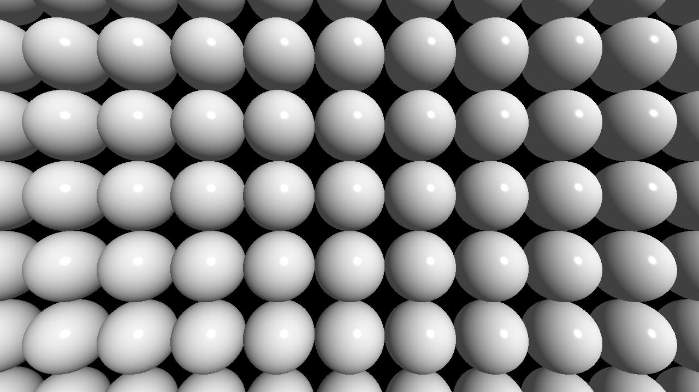 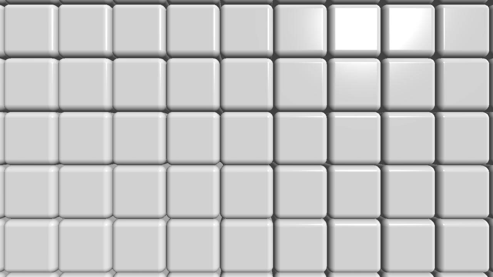 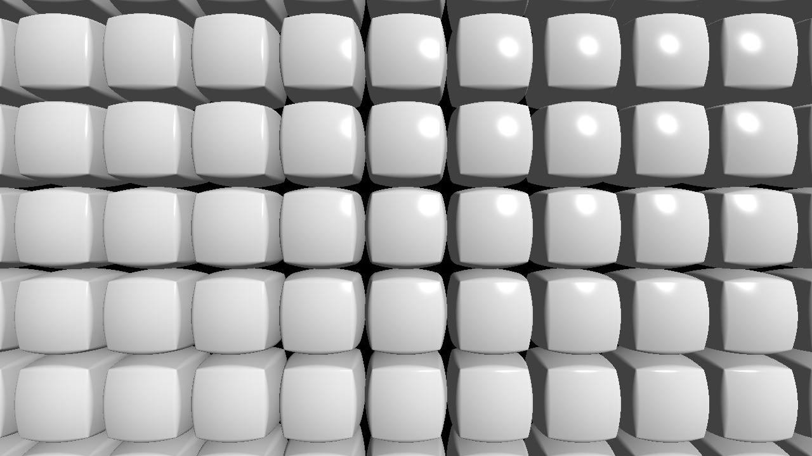 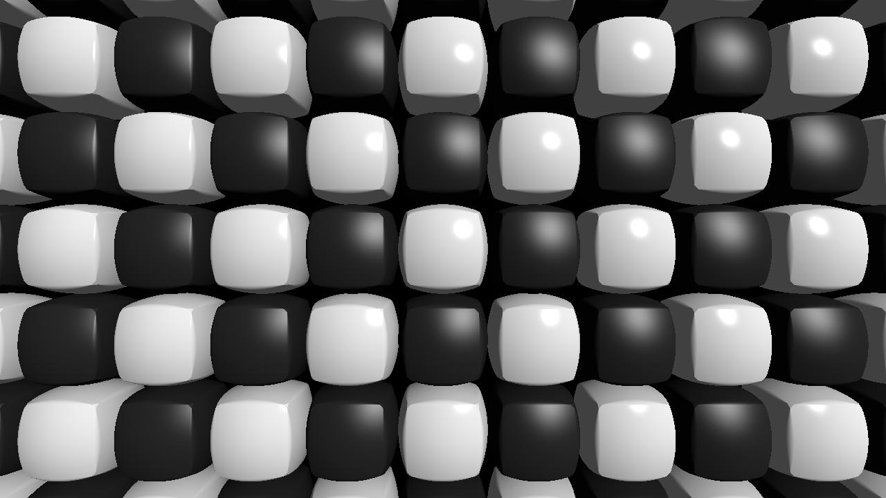
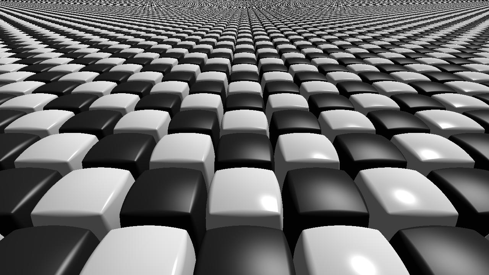

Références
- Présentation (2008): Render the world with two triangles
- Référence + code (2008): Modeling with distance functions
- Code (2016): hg_sdf (⚠ GLSL, pas GLSL ES...)
- Article (1996): Sphere tracing
- Présentation (2015): How to Create Content with Signed Distance Functions
- Exemples: Shadertoy [raymarching]